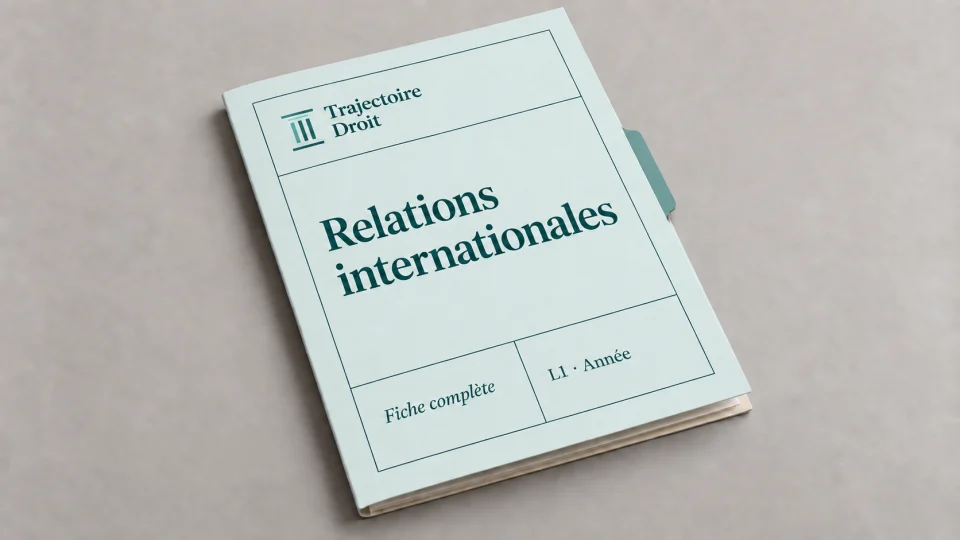

Sujets de relations internationales L1, exemples d'examen avec leur correction
En relations internationales L1, les sujets d'examen prennent quatre formes : la dissertation, le commentaire de document, les questions de cours et, dans certaines facultés, un cas pratique de droit international. Cette page présente une banque de sujets par thème du programme, une dissertation sur la souveraineté avec son plan, un cas pratique sur l'usage de la force et huit questions de cours corrigées.


La fiche complète du semestre 1
Relations internationales L1, la fiche complète en 21 chapitres
Les 21 chapitres du programme, de la société internationale à la gouvernance mondiale. Chaque chapitre donne les dates, les articles de la Charte des Nations unies et les décisions de la Cour internationale de Justice que tu cites dans tes dissertations et tes cas pratiques.
- Un plan par chapitre pour construire tes dissertations
- Les articles et les arrêts à citer, avec leur date
- Un PDF reçu juste après le paiement
Paiement Stripe · accès à vie · mises à jour incluses · garantie satisfait ou remboursé sous 7 jours
Quels sujets d'examen tombent en relations internationales en L1 ?
La matière de relations internationales se compose de trois blocs. Le premier explique comment on lit les rapports entre États, avec les théories comme le réalisme et le libéralisme, puis l'histoire qui part des traités de Westphalie de 1648. Le deuxième décrit les acteurs, c'est-à-dire l'État, les organisations internationales comme l'ONU et les acteurs qui ne sont pas des États, par exemple les ONG ou les entreprises multinationales. Le troisième présente les règles qui s'appliquent entre États, depuis les sources du droit international jusqu'à l'interdiction du recours à la force.
Les sujets d'examen puisent dans ces trois blocs, et chaque faculté fixe son format. Tu dois donc d'abord regarder dans ta plaquette quel exercice t'attend. Cette page te donne les quatre formats que l'on rencontre, une liste de sujets de dissertation possibles, une dissertation et un cas pratique corrigés, puis huit questions de cours.
Un sujet de relations internationales se traite avec la même méthode, quel que soit son format. Tu définis d'abord chaque mot du sujet, puis tu choisis la théorie, le texte ou la décision qui permet d'y répondre. Tu appuies enfin chaque idée sur un exemple daté, comme un traité, un article de la Charte des Nations unies ou un arrêt de la Cour internationale de Justice. En effet, une idée sans exemple daté reste abstraite aux yeux du correcteur.
Les quatre formats d'examen de relations internationales, un par un
Voici ce que chaque exercice attend de toi, et la page qui t'aide à le préparer.
1. La dissertation
Le sujet tient en quelques mots, par exemple « La souveraineté de l'État » ou « L'ONU et la paix ». Tu réponds donc par un plan en deux parties qui soutient une thèse. Tu prépares d'abord l'exercice avec la méthode de la dissertation juridique, puis la dissertation corrigée sur le réalisme et le libéralisme t'en donne un exemple complet. Un second sujet est traité plus bas.
2. Le commentaire de document
On te remet un texte, par exemple un extrait de la Charte des Nations unies, d'un discours ou d'une résolution. Tu présentes d'abord le document, c'est-à-dire son auteur, sa date et son contexte. Tu en tires ensuite deux ou trois idées qui forment ton plan, et chacune s'appuie sur une phrase du texte et sur une connaissance du cours.
3. Les questions de cours et le QCM
Elles demandent une définition, une date ou un mécanisme, par exemple le nombre de membres du Conseil de sécurité. Les huit questions corrigées plus bas te montrent le niveau de précision attendu.
4. Le cas pratique de droit international
Certains enseignants décrivent une situation entre deux États et demandent si l'un d'eux a violé le droit international. Le raisonnement reste celui de tout cas pratique, avec les faits, le problème de droit, la règle et l'application, comme l'explique la méthode du cas pratique.
Quels sujets de dissertation peuvent être posés, thème par thème ?
Le programme limite le nombre de sujets possibles. Voici treize sujets, rangés par thème, avec l'angle qui te permet de bâtir un plan en deux parties.
- « La société internationale est-elle anarchique ? » Il n'existe aucun gouvernement mondial au-dessus des États. Pourtant des règles et des organisations existent, ce qui donne un plan en deux temps, une société sans pouvoir central puis une société qui s'organise malgré tout.
- « La puissance en relations internationales ». La puissance militaire se compare à la puissance économique et à l'influence culturelle, que Joseph Nye appelle le soft power, c'est-à-dire la capacité d'attirer sans contraindre.
- « Le système westphalien ». On présente traditionnellement les traités de 1648 comme le point de départ d'un système d'États souverains. Les deux guerres mondiales remettent ensuite ce modèle en question.
- « La guerre froide et ses conséquences ». Le monde de 1947 à 1991 s'organise autour de deux blocs. Après la disparition de l'URSS, l'ordre international change.
- « Les éléments constitutifs de l'État ». Le territoire, la population et le gouvernement suffisent-ils à faire un État, ou faut-il y ajouter la souveraineté ?
- « La reconnaissance d'un État ». Un État existe-t-il parce que les autres le reconnaissent, ou existe-t-il avant leur reconnaissance ? Le plan oppose la thèse constitutive et la thèse déclarative.
- « La souveraineté de l'État ». Le sujet corrigé plus bas en traite une variante, la souveraineté face aux organisations internationales.
- « L'ONU peut-elle maintenir la paix ? » Les pouvoirs du Conseil de sécurité s'opposent au droit de veto de ses cinq membres permanents.
- « Les acteurs non étatiques ». Les organisations non gouvernementales et les entreprises multinationales prennent-elles la place des États ?
- « Les sources du droit international ». L'article 38 du Statut de la Cour internationale de Justice classe les sources, et le sujet demande si cette liste suffit à décrire le droit actuel.
- « Le règlement pacifique des différends ». Les États choisissent librement leur mode de règlement, de la négociation à la Cour internationale de Justice, ce qui explique les limites de la voie judiciaire.
- « L'interdiction du recours à la force ». L'article 2 paragraphe 4 de la Charte pose l'interdiction, puis la légitime défense et l'autorisation du Conseil de sécurité en forment les exceptions.
- « La responsabilité internationale de l'État ». Un fait illicite attribuable à un État l'oblige à réparer, et le sujet demande à quelles conditions.
Tu peux t'entraîner en préparant le plan de chacun de ces sujets, puis en le comparant à ton cours pour repérer les exemples datés qui manquent.
Dissertation corrigée, la souveraineté de l'État est-elle remise en cause par les organisations internationales ?
Ce sujet est original, écrit pour cette page. Il croise deux chapitres du programme, la souveraineté de l'État et les organisations internationales, et il convient donc bien à un partiel. Je te montre les trois étapes du travail préparatoire, puis le plan détaillé. Tu peux ensuite reprendre cette méthode sur n'importe quel autre sujet de la liste.
Étape 1, le décorticage des mots du sujet
La souveraineté est le pouvoir suprême de l'État. À l'intérieur, aucun pouvoir ne se place au-dessus de lui. À l'extérieur, il ne dépend d'aucun autre État, ce que l'arbitre Max Huber résume en 1928, dans la sentence de l'Île de Palmas, en écrivant que la souveraineté dans les relations entre États signifie l'indépendance. Une organisation internationale est une association d'États créée par un traité, avec ses propres organes et une volonté distincte de celle de ses membres. En effet, l'expression « remise en cause » demande si l'organisation diminue réellement le pouvoir de l'État. Le sujet pose donc une question de degré, et la réponse se nuance.
Étape 2, la problématique
Les États créent les organisations internationales par un acte de leur souveraineté, mais ces organisations peuvent ensuite leur imposer des décisions. Comment un État reste-t-il souverain quand il obéit à une organisation qu'il a lui-même créée ?
Étape 3, le plan détaillé
I. L'organisation naît de la souveraineté des États et reste sous leur contrôle.
A. Elle repose sur leur consentement. Une organisation naît d'un traité, car un État choisit librement de le signer. Dans l'affaire du Wimbledon, le 17 août 1923, la Cour permanente de justice internationale a affirmé que la faculté de contracter des engagements internationaux est précisément un attribut de la souveraineté de l'État. Cette idée rejoint donc la théorie de l'autolimitation, que le juriste Jellinek a construite à la fin du XIXe siècle, selon laquelle l'État est assez libre pour se lier lui-même. Le retrait du Royaume-Uni de l'Union européenne, effectif le 31 janvier 2020 sur le fondement de l'article 50 du traité sur l'Union européenne, montre aussi que cette liberté demeure.
B. Elle respecte l'égalité souveraine et le domaine réservé. L'article 2 paragraphe 1 de la Charte des Nations unies fonde l'ONU sur l'égalité souveraine de tous ses membres, et chaque État dispose d'une voix à l'Assemblée générale. L'article 2 paragraphe 7 interdit à l'Organisation d'intervenir dans les affaires qui relèvent essentiellement de la compétence nationale d'un État, sauf pour les mesures de coercition du chapitre VII. Cette égalité reste toutefois juridique, puisque les cinq membres permanents du Conseil de sécurité détiennent un droit de veto selon l'article 27 paragraphe 3.
II. L'organisation limite pourtant la liberté d'action des États.
A. Elle peut prendre des décisions obligatoires. D'après l'article 25 de la Charte, les membres de l'ONU acceptent et appliquent les décisions du Conseil de sécurité. Quand le Conseil agit au titre du chapitre VII, ses résolutions s'imposent même à un État qui les refuse. Par exemple, la résolution 1373 du 28 septembre 2001 oblige tous les États à lutter contre le financement du terrorisme. De plus, l'article 103 prévoit que la Charte l'emporte sur les autres traités des États membres.
B. Elle peut aller jusqu'à l'intégration. Dans l'Union européenne, la Cour de justice des Communautés européennes a reconnu l'effet direct du droit communautaire dans l'arrêt Van Gend en Loos du 5 février 1963, puis sa primauté sur le droit national dans l'arrêt Costa contre ENEL du 15 juillet 1964. Les États exercent alors en commun une part de leurs compétences, comme le rappelle l'article 88-1 de la Constitution française. La souveraineté ne disparaît donc pas, mais l'État l'exerce désormais en partie avec les autres.
Réponse à donner. Les organisations internationales limitent la liberté d'action des États sans leur retirer leur souveraineté, car chaque limite trouve son origine dans un traité que l'État a signé.
Cas pratique corrigé, une riposte armée est-elle de la légitime défense ?
Cet exercice porte sur l'usage de la force, un chapitre où la règle et ses exceptions se prêtent bien au raisonnement du cas pratique. Le sujet est original, et les deux États n'existent pas. Tu appliques ici la règle de l'article 2 paragraphe 4, puis ses deux exceptions.
Énoncé. Le 3 mars, des soldats de la Dorélie tirent, sur ordre de leur commandant, depuis leur côté de la frontière sur un poste de douane de la Sarvanie. Deux douaniers sont blessés, et les tirs cessent le soir même. Le 4 mars, l'aviation de la Sarvanie bombarde la capitale de la Dorélie et détruit un quartier administratif. Le 5 mars, la Sarvanie envoie une lettre au Conseil de sécurité pour expliquer qu'elle a agi en légitime défense. La Dorélie dénonce une agression. Qui a violé le droit international, et la Sarvanie peut-elle invoquer la légitime défense ?
Le problème de droit. Un État peut-il répondre par des frappes aériennes sur la capitale d'un autre État à des tirs isolés contre l'un de ses postes frontière ?
La règle. L'article 2 paragraphe 4 de la Charte des Nations unies interdit aux États de recourir à la menace ou à l'emploi de la force contre l'intégrité territoriale ou l'indépendance politique d'un autre État. La Cour internationale de Justice reconnaît aussi cette interdiction comme une règle coutumière, dans l'arrêt Nicaragua contre États-Unis du 27 juin 1986. Deux exceptions principales existent. D'abord, le Conseil de sécurité peut autoriser la force au titre du chapitre VII, notamment par l'article 42. Ensuite, l'article 51 réserve le droit de légitime défense en cas d'agression armée. La légitime défense suppose une agression armée, et la coutume que la Cour reconnaît y ajoute une riposte nécessaire et proportionnée. L'État doit aussi porter immédiatement ses mesures à la connaissance du Conseil de sécurité.
L'application aux tirs de la Dorélie. Des soldats qui agissent sur ordre de leur commandant engagent leur État, et leurs tirs sur un poste de la Sarvanie constituent vraisemblablement un emploi de la force contre un autre État. L'article 2 paragraphe 4 est donc vraisemblablement violé. Il reste toutefois à savoir si ces tirs forment une agression armée. Dans l'affaire du Nicaragua, la Cour distingue les formes les plus graves de l'emploi de la force, qui constituent une agression armée, des formes moins graves comme le simple incident de frontière. Deux douaniers blessés par des tirs isolés se rapprochent plutôt de cette seconde catégorie. En premier lieu, l'article 51 n'est donc pas applicable, même si une attaque limitée peut parfois être qualifiée d'agression armée, ce qui rend la qualification discutable.
L'application à la riposte de la Sarvanie, si l'on admet une agression armée. Admettons donc que les tirs soient une agression armée. La riposte doit alors rester nécessaire et proportionnée, c'est-à-dire adaptée au but de repousser l'attaque. Or la Sarvanie bombarde la capitale et détruit un quartier administratif, alors que la Dorélie avait seulement tiré sur un poste de douane. Cette riposte dépasse manifestement ce but. La nécessité pose aussi un problème, car les tirs ont cessé le 3 mars au soir et rien n'indique que la Sarvanie ait essayé une autre voie avant de bombarder. Sa lettre du 5 mars respecte l'obligation d'informer le Conseil de sécurité, mais cette information ne suffit pas à rendre la riposte licite.
La conclusion. En premier lieu, la Sarvanie ne peut pas invoquer la légitime défense, parce que de simples tirs isolés atteignent difficilement le seuil de l'agression armée. En second lieu, elle ne le peut pas non plus, car sa riposte n'est ni nécessaire ni proportionnée. Les tirs de la Dorélie violent vraisemblablement l'article 2 paragraphe 4, et les bombardements de la Sarvanie le violent à leur tour. Ces deux faits internationalement illicites engagent la responsabilité des deux États. Le bombardement de la capitale peut d'ailleurs constituer lui-même une agression armée contre la Dorélie, et le Conseil de sécurité peut intervenir sur le fondement de l'article 39 s'il constate une menace contre la paix. Dans ta copie, tu termines de la même façon, par une réponse aux deux questions de l'énoncé.
Huit questions de cours corrigées en quelques lignes
Ces questions reviennent sous forme de QCM ou de questions courtes. Essaie de répondre avant de lire la solution. Tu retrouves dans chaque réponse la précision d'une date ou d'un article, et c'est ce niveau que tu dois atteindre.
- Quels sont les éléments constitutifs de l'État ? Un territoire défini, une population permanente et un gouvernement, auxquels la convention de Montevideo de 1933 ajoute la capacité d'entrer en relation avec les autres États. Le cours y ajoute la souveraineté, qui distingue l'État d'une simple collectivité administrative.
- Que sont les traités de Westphalie ? Ils mettent fin en 1648 à la guerre de Trente Ans, à Münster et à Osnabrück. On leur rattache la naissance d'un système d'États souverains, c'est pourquoi on parle de système westphalien.
- Combien de membres compte le Conseil de sécurité, et comment vote-t-il ? Quinze membres siègent au Conseil. Cinq sont permanents, à savoir les États-Unis, la Russie, la Chine, la France et le Royaume-Uni, et dix sont élus pour deux ans. Ensuite, une décision de fond demande neuf voix, sans veto d'aucun membre permanent, selon l'article 27 paragraphe 3 de la Charte. En revanche, l'abstention d'un membre permanent n'empêche pas l'adoption.
- Quelle différence entre une recommandation et une décision obligatoire ? Les résolutions de l'Assemblée générale sont en général des recommandations. Les décisions du Conseil de sécurité s'imposent aux États d'après l'article 25, et les résolutions prises au titre du chapitre VII sont les plus clairement obligatoires.
- Quelles sont les sources du droit international ? L'article 38 paragraphe 1 du Statut de la Cour internationale de Justice cite les conventions internationales, la coutume internationale et les principes généraux de droit. La jurisprudence et la doctrine servent de moyens auxiliaires.
- La Cour internationale de Justice peut-elle juger un État sans son accord ? Non. Sa compétence repose sur le consentement des États, donné par un compromis, par une clause d'un traité ou par une déclaration d'acceptation, selon l'article 36 de son Statut.
- Qu'est-ce qu'une organisation internationale ? Une association d'États créée par un traité, dotée d'organes propres et d'une personnalité juridique distincte de celle de ses membres, ce que la Cour a reconnu pour l'ONU dans son avis du 11 avril 1949. L'ONG est une association de droit privé, créée par des particuliers.
- La reconnaissance crée-t-elle l'État ? Selon la thèse déclarative, qui domine, un État existe dès qu'il réunit ses éléments constitutifs, et la reconnaissance constate cette existence. L'article 3 de la convention de Montevideo le formule ainsi.
Les erreurs qui font perdre des points en relations internationales
- Tu cites un événement sans date. Une copie qui écrit « après la guerre » ou « à l'époque » empêche le correcteur de vérifier ta connaissance. Une date précise, comme 1648 pour Westphalie ou le 26 juin 1945 pour la signature de la Charte, montre que tu maîtrises la chronologie.
- Tu confonds recommandation et décision obligatoire. Une résolution de l'Assemblée générale oblige rarement les États, alors que les résolutions du Conseil de sécurité prises au titre du chapitre VII sont les plus clairement obligatoires.
- Tu présentes la souveraineté comme un pouvoir sans limite. Un État souverain reste lié par les traités qu'il signe et par la coutume internationale. La souveraineté s'exerce donc dans le cadre du droit international.
- Tu mélanges les théories. Le réalisme place la puissance au centre, alors que le libéralisme met en avant la coopération et les institutions. Une idée attribuée à la mauvaise théorie fait perdre le point de la question.
- Tu donnes ton opinion à la place de l'analyse. Le correcteur attend l'application de la règle aux faits. La qualification juridique, par exemple « agression armée » ou « légitime défense », vaut plus que l'avis selon lequel une intervention est injuste.
Comment t'entraîner pour un partiel de relations internationales
Tu progresses en alternant deux temps. D'abord, tu apprends chaque chapitre avec ses dates, ses textes et ses décisions de justice. Ensuite, tu prends un sujet de la liste ci-dessus, tu bâtis son plan en un temps limité et sans notes, puis tu compares avec ton cours. Cette comparaison te montre les exemples datés qui te manquent.
Pour revoir la matière dans son ensemble, tu peux lire la page de relations internationales L1, qui présente le programme et les notions à maîtriser. Pour t'exercer à la méthode, la dissertation sur le réalisme et le libéralisme donne un second exemple de plan. Si tu veux vérifier ta méthode sur une autre matière de L1, l'introduction au droit pose les bases du raisonnement juridique.
Où trouver des sujets de relations internationales corrigés en PDF ?
Trajectoire Droit propose deux supports pour cette matière. D'abord, la fiche complète reprend les 21 chapitres du programme, de la notion de relations internationales jusqu'à la gouvernance mondiale, avec les dates, les textes et les arrêts à connaître pour traiter les sujets de cette page. Ensuite, le cours complet développe chaque chapitre sur une fois et demie à deux fois plus de pages, avec des schémas complets et l'histoire des grands arrêts, et il te donne les arguments de tes devoirs maison. Chaque produit s'achète séparément, et le Pack L1 réunit les huit fiches complètes de première année. Tu peux aussi consulter le catalogue des fiches complètes pour comparer les formats.
Questions fréquentes
Quels sont les sujets de relations internationales en L1 ?
Comment faire une dissertation de relations internationales ?
Les relations internationales sont-elles du droit ?
Existe-t-il des sujets de relations internationales corrigés en PDF ?

Le Pack Ultra L1 S1 réunit les 31 ressources de ton premier semestre de L1 pour 239 €, la fiche de relations internationales L1 comprise. Voir le contenu du pack →
Où se rangent ces sujets dans le programme
Les relations internationales relient le droit, l'histoire et la science politique. Les pages ci-dessous prolongent le travail de cette page.